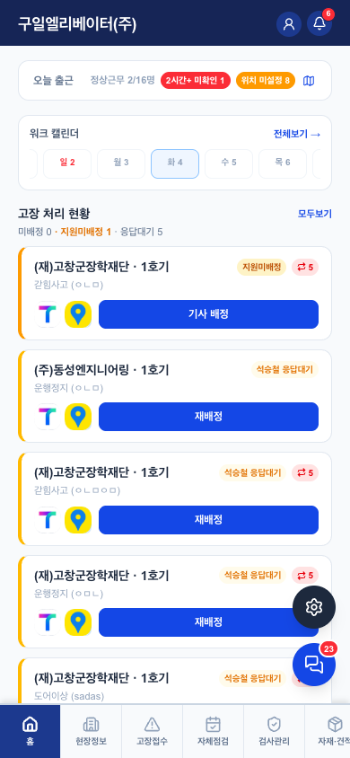

홈 (관리자 모바일) v0.1
1. 이 화면의 정체 — 기사 홈의 관리자 분기
- 별도 화면이 아니라 홈(기사)와 같은 코드에서 role=admin일 때 위젯 구성이 바뀌는 것. 공통 위젯(워크캘린더·집중관리·검사관제·게시판)은 기사 홈 문서를 따른다 — 여기엔 다른 것만 적는다
- PC 관리자는 로그인 시 웹 콘솔로 자동 이동(2026-08-04 구현) — 이 화면은 폰 든 관리자용. 현장에서 즉시 배정·재배정하는 게 존재 이유
- 같은 관리자여도: 폰 = 즉시 대응(배정·재배정), PC 콘솔 = 관리 업무(설정·통계·인사)
2. 기사 홈과 다른 요소

| 요소 | 기사 홈과의 차이 |
|---|---|
| 오늘 출근 (관리자 전용) | 출근 체크 버튼 대신 전 직원 출근 요약: 정상근무 n/16, 2시간+ 미확인, 위치 미설정. 탭하면 출근부 |
| 고장 처리 현황 | 기사=본인 것만·거리순 / 관리자=전체 미처리·미배정 우선 정렬 + 미배정·지원미배정·응답대기 카운트 |
| 고장 카드 버튼 | 기사="내가 출동" / 관리자=기사 배정·재배정 (배정 시트: 기사별 상태(출동중·처리중·휴가) 표시, 진행중 기사에게 배정하면 경고) |
| 알림 배지 | 같은 종이지만 관리자 대상 알림(접수·거부·중대·15분 미배정 등)이 와서 체감 다름 |
공통 위젯·QA는 홈(기사) 문서 기준. 배정·재배정 동작의 QA는 고장접수 문서 4장(선착순·덮어쓰기 방지)과 동일 로직.
3. QA 체크포인트
- ✅ 재배정 시 원기사 회수 알림 + 조건부 update (고장접수 4장에서 검증)
- ✅ 진행중(출동·처리중) 기사에게 배정 시 경고 표시 (busyStatusOf)
- 출근 요약의 "2시간+ 미확인"·"위치 미설정" 기준값 — 운영하며 조정 여지
- 관리자도 기사 겸직 가능(작은 회사) — 그 경우 본인 출동 버튼이 없는 게 불편할 수 있음 관찰 중
6. 화이트라벨 — 구일전용 → 타사 일반화
기사 홈과 동일 (①헤더 회사명 ②집중관리 기준 ③검사관제 플래그) + 추가 1건:
| # | 지금 | 어떻게 |
|---|---|---|
| 4 | 출근 요약 기준(2시간 미확인 등)·직원 수 전제가 구일 규모(16명) 기준 | 기준값은 tenants.settings로, 표시는 인원 수와 무관하게 이미 동작 — 확인만 |
변경 이력
| 버전 | 날짜 | 변경 |
|---|---|---|
| v0.1 | 2026-08-04 | 최초 작성 — 기사 홈과의 차이만 기록하는 형식(같은 코드의 role 분기라서). 실물 캡처 포함 |